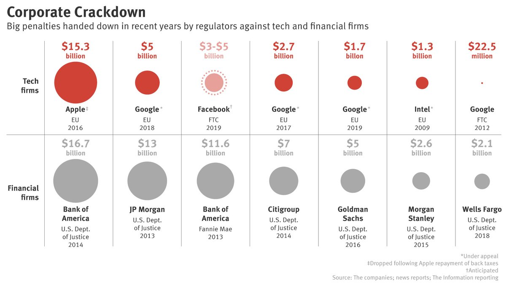

These "crimes" you all speak so seriously of... To me, this has all been nothing more than a game.
Ted Kaczynski, the author of influential essays such as Technological Slavery, is rotting in a high-security prison for life for killing 3 people. Meanwhile...
The obvious question is: are the vermin commiting these crimes going to suffer any consequences? And the answer is a resounding NO - in fact, in our current society, the elites and their minions have free reign to kill, hurt and destroy. And they don't even try to hide it - it's out in the open; I've found all the above information on public search engines. So the mass murderers get off scott-free while a small fry like Ted will never again see the light of day. But in the end he's still a killer, so let's look at some other things a regular person can get punished for:
He said: "it is a persistent disobedience of court orders but I will be sending a man to prison for asking for food when he was hungry. It is a difficult situation and there is no satisfactory answer."(Oh, there is - just leave him alone!)
Okay, enough of these. Painting graffiti, feeding pigeons, begging or selling handmade stuff will net you a bigger punishment than even mass murder at the hands of the elites (who will not suffer any consequences at all). They are an enemy who surpasses the law - since they make it, they have of course included a clause for themselves and their minions to be immune to it. All the stuff for which you would be punished, they do with impunity. Take the Kazakh guy who went to prison for hanging a banner, while the government can freely spread political propaganda everywhere they want to - on buses, flats, the radio, TV...Of course they also let big corpos do the same. The world is their territory, their playground - they are the judge, jury and executioner. It is up to them to decide what "crime" means - if they decide cutting down trees is justified, then that's that (but only if they do so)!
The law exists for the sole purpose of enslaving you - it even includes something called disorderly conduct, which can fit absolutely everything and is obviously designed to provide a way to punish anyone the elites want to get rid of. This is why it's pointless to focus on politics, since due to their design, you absolutely cannot affect anything through them. Was anyone asked when Austria implemented a law which would force you to identify yourself on the Internet? Or the many other recent harmful inventions such as the EU Copyright Directive? And yet the law has passed. More than that, we are affected by ancient laws that have clearly passed their expiry date (such as compulsory schooling which keeps imprisoning and destroying children worldwide). Who do we even blame for the existence of these laws currently?
What decides where, how and which laws get applied? That task has been assigned to the police - another privileged group under the elites' control and protection. They suffer no punishment even if they hurt or kill innocent people. From the first article: Police fatally shoot an average of around 1000 people each year, and the criminal justice system holds that almost every single shooting is legal
. Why are the elites allowing them to avoid consequences? Because they are performing a useful and essential function of keeping the public under control. It all starts already in school - the process of creating a scared and obedient population has to begin when they're young and defenseless:
In December of 2015, Tucker, a 13-year-old Black student in Washington state, was arrested as a result of an incident that started when he mumbled a curse word to himself. Tucker’s teacher ordered him to go sit outside on a bench; when Tucker refused to go outside unprotected in the cold, his teacher called the school police officer. The officer grabbed Tucker, slammed him to the ground, and as Tucker flailed, put his knee of the back of Tucker’s head. Tucker was then arrested and booked into juvenile detention. He was charged with the crimes of ‘disturbing school’ and ‘disrupting a law enforcement officer.‘
And they are unaccountable as usual:
Even fewer schools require any kind of data collection of officer activities. And overwhelmingly, students, parents and teachers have little oversight of, and no recourse for conflicts with, school police officers.
This job is so important that a police officer cannot ever feel inhibitions while doing it - thus their immunity to punishment. Disruption, disorder, resistance is something the system absolutely hates and it must be swiftly and fully dealt with. Another way this happens is when social workers (another protected group) take away the children of people raising them "wrong" (a kidnapping if done by anyone else), which can include the child not being heavy enough, despite being healthy otherwise, using a mineral supplement, or feeding them an organic diet. They are also unaccountable, as you might have guessed:
However, there is one thing that remains rare in CPS cases - that is, for anyone within the system to be held accountable. Repercussions for social workers, the CPS agency, or doctors involved in taking children from innocent parents are very rare.
Have you ever heard of a corporate big fish being jailed? Me neither. That is regardless of corporations being responsible for causing someone's cancer through their products, and burying the evidence. Or bribing doctors to promote drugs proven to cause harm for unapproved (illegal) uses. What would happen if you sold a poisoned doughnut on the streets? Probably an immediate jail time if caught. But for the corporate higher-ups, it's always either a slap on the wrist or a fine. That is if they are even required to pay them...
Apple fine was canceled. Facebook is not even confirmed yet. Three of four Google's fines (as well as the Intel one) are being appealed, and the remaining one was tiny in comparison. How about the banking fines? With how much money they have, they pretty much end up being just slaps on the wrist - JPMorgan Chase is the largest bank in the United States, and is ranked by S&P Global as the sixth largest bank in the world by total assets as of 2018, to the amount of $2.535 trillion.
So the fine is not even 1% of what they have. Besides, they can just print more. As we can see, fining corpos is nothing more than a theater, and the people responsible for their crimes never suffer any direct consequences regardless of the harm they do.
Whenever you mention any societal problems to people, they inevitably reply with a variant of "well, we've voted these people in!" as if they were hypnotized. This is the great trap that the elites have set up: first, create the political system that enslaves people, and then convince them that the only way to change the situation is through that system (directing attention away from the real solutions). Let's set the record straight: what can you even affect by voting (assuming the elections are real, which is doubtful)? Only which president or political party rules over you (again, assuming the reality of elections...). Of course there are usually only two or three realistic choices, because if you vote for some obscure guy, he has no chance of getting in anyway. But more importantly, as the voting period ends, so does your decision-making power. Now, the rulers can approve or deny whatever laws they imagine, and you can only sit back and watch. All promises that candidates have made go out the window, simply because there is zero consequence for violating them. More than that - if you live, for example, in an European Union country, your own nation has to answer to them anyway, lest it get fined. So the existence of even the national government becomes illusory; not that that would make us more free - you'd still have no way to affect specific government decisions (except to wait for the next elections and blindly hope your new ruler will finally do something about the things you care about - which has literally never happened). Clearly we can see, that even with the best assumptions, the voting system is completely hopeless for providing real change.
What about when something beneficial to us happens in the law world? Well, this works the same way as Mozilla implementing a change that actually helps the user once a year or so. They simply have to throw us a bone once in a while so that people celebrate and assume the system is working in their favor. Or, they could simply be an accidental results bound to happen in a chaotic world. Anyway, when actually analyzed, these benefits often turn out to be illusory. Let's take GDPR, a recent law allegedly allowing people to request the data companies have on them, as well as require consent before, say, storing cookies on your device:
As you can see, GDPR is yet another colossal governmental failure, so common whenever they try to regulate the Internet. Let's look at some other examples - Maine lawmakers pass bill to prevent ISPs from selling browsing data without consent. First of all, this law could have only happened because of another evil law that came before it. Also, Maine is just one place out of millions in the world. How many people will really benefit? ISPs can still do lots of malicious things like show you ads, block VPNs or torrents, slow down connections on purpose, falsely advertise internet speeds, etc. Where are the laws against those? And it has to be asked what will be the consequences against ISPs violating this new law (I suspect nothing or a small fine as usual). And for every "good law" like this, a hundred bad ones get implemented - such as Austria's real name requirement, Germany banning encryption, GCHQ Ghost Proposal (which would allow silently adding a law enforcement participant to a group chat or call
), UK porn block, EU copyright directve, and many, many others. Then the thousands upon thousands of ancient laws that harm us to this day. It always makes me cringe when people send letters or petitions trying to get a law stopped. I mean do you think that's really going to work? They know what they're doing and have no obligation to listen to the plebeians (that's me and you and anyone else who writes them). Even if such a letter succeeded, you'd have to send millions of those to tackle all the shit laws. You think you can do it? Good luck.
What about the so-called good politicians? Simply put - it's another illusion. Either they don't exist or they don't get into positions of power. Every so often an alleged political hero appears whom people then begin to worship. NaturalNews, one of my favorite news sites, still believes that Trump will make America great again
, and runs stories defending him all the time. That's despite the fact that he lied about many important issues. There are similar examples in various other countries. The media often shows vigorous debates between various politicians and spreads the left wing / right wing mythology so that people begin to form camps that fight between each other - all while being unaware that their opinion is irrelevant, especially since the elites control all the provided options (hey, it's Google vs Mozilla once again!). All politicians are puppets of the shadow government, so it doesn't even matter who you support. The elites do everything to direct your focus towards the recent "smart" Trump tweet, the latest political scandal or yet another fake conflict (Russia or China versus USA...) so they can continue applying their plans under the veil of distraction.
Laws are designed to keep us in chains. Democracy is an illusion. Certain people are allowed to cause untold destruction without consequences while the not-so-lucky ones (that's you and me) suffer for violating the whims of the higher caste. Elections (if real) do not give us any power and in fact are a distraction. The most important thing for people to do, then, would be to topple the current law-based political system. How this can be done will be explained in another article...
{kind=link}